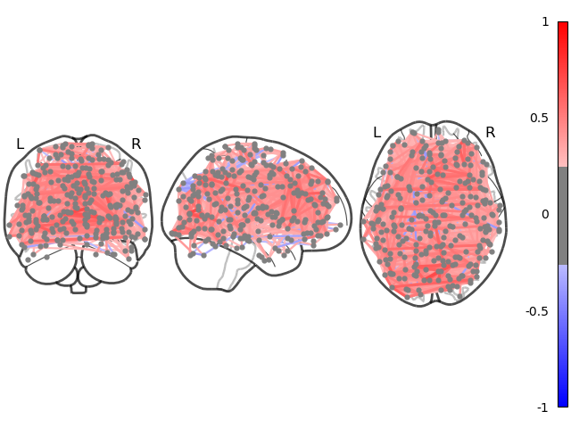
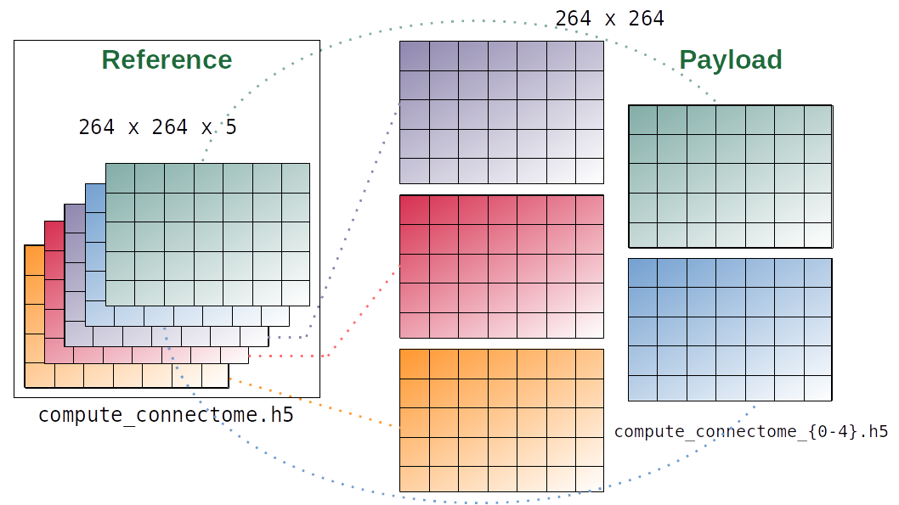

ACME
Flexible Scalability for Research Software
Fürtinger
Ernst Strüngmann Institute (ESI) Frankfurt
Ernst Strüngmann Institute (ESI) Frankfurt
Brain Research Institute Universität Bremen
February 21, 2023
Outline
I Big Data Is Great
II Why ACME?
III An Offer You Can Refuse
I Big Data Is Great
Outline
I Big Data Is Great
II Why ACME?
III An Offer You Can Refuse
Big Data: A Topical Example
II Why ACME?
Outline
I Big Data Is Great
II Why ACME?
III An Offer You Can Refuse
Get SLURMed
# Which subject do we want to analyze?
subIdx = 0
# Take stock of data on disk
data = datasets.fetch_development_fmri(age_group="adult")
atlasCoords = datasets.fetch_coords_power_2011()
# Extract fMRI time-series averaged within spheres @ atlas coords
mask = NiftiSpheresMasker(seeds=atlasCoords)
timeseries = mask.fit_transform(data.func[subIdx],
confounds=data.confounds[subIdx])
# Compute functional connectivity b/w brain regions
estimator = GraphicalLassoCV()
estimator.fit(timeseries)
# Inspect results
plotting.plot_connectome(estimator.covariance_)
Get SLURMed
connectome.py
def compute_connectome(subIdx):
# Take stock of data on disk
data = datasets.fetch_development_fmri(age_group="adult")
atlasCoords = datasets.fetch_coords_power_2011()
# Extract fMRI time-series averaged within spheres @ atlas coords
masker = NiftiSpheresMasker(seeds=atlasCoords)
timeseries = masker.fit_transform(data.func[subIdx],
confounds=data.confounds[subIdx])
# Compute functional connectivity b/w brain regions
estimator = GraphicalLassoCV()
estimator.fit(timeseries)
return estimator.covariance_
if __name__ == "__main__":
# Compute functional connectivity of subject and save result
con = compute_connectome(sys.argv[1])
np.save("con_{}".format(sys.argv[1]), con)Get SLURMed
connectome.py
run_connectome.sh
#!/bin/bash
#
# SLURM script for computing per-subject connectomes
#
#SBATCH -J connectome_batch # Common name for the job-array
#SBATCH -p myPartition # Partition
#SBATCH -c 2 # Use two cores
#SBATCH -t 0-2:00 # Max run-time of 2 hours
#SBATCH --mem 4000 # Request 4 GB of RAM
#SBATCH -o con_%A_%a.out # Redirect stdout/stderr to file
#SBATCH --array=1-33 # Define job-array
source /path/to/conda/etc/profile.d/conda.sh
conda activate myenv
srun python connectome.py "$SLURM_ARRAY_TASK_ID"Get SLURMed
connectome.py
run_connectome.sh
sbatch run_connectome.shGet SLURMed
connectome.py
run_connectome.sh
sbatch run_connectome.sh
Submitted batch job 21607933
squeue --me
ACCOUNT JOBID PARTITION NODELIST PRIORITY TIME STATE
fuertingers 21607933_3 8GBXS esi-svhpc46 25228545 0:11 RUNNING
fuertingers 21607933_4 8GBXS esi-svhpc46 25228545 0:11 RUNNING
fuertingers 21607933_5 8GBXS esi-svhpc29 25228545 0:11 RUNNING
fuertingers 21607933_2 8GBXS esi-svhpc24 25228545 0:15 RUNNING
fuertingers 21607933_1 8GBXS esi-svhpc24 25228545 0:16 RUNNING
...Get SLURMed

It All Started With A gist…
Asynchronous Computing Made ESI
- accelerates “simple”, i.e., embarassingly parallel, workloads
- wraps sequential code and maps on parallel computing hardware
- DIY parallelization via context manager
ParallelMapin Python - built on top of dask and dask-jobqueue to integrate with HPC clusters


An Unpractical Example
Objective: Evaluate f for four different values of x and y = 4
f(2, 4, z=3) = 18
f(4, 4, z=3) = 24
f(6, 4, z=3) = 30
f(8, 4, z=3) = 36
An Unpractical Example
An Unpractical Example
An Unpractical Example
Back To SLURM Connectomes…
connectome.py
def compute_connectome(subIdx):
# Take stock of data on disk
data = datasets.fetch_development_fmri(age_group="adult")
atlasCoords = datasets.fetch_coords_power_2011()
# Extract fMRI time-series averaged within spheres @ atlas coords
masker = NiftiSpheresMasker(seeds=atlasCoords)
timeseries = masker.fit_transform(data.func[subIdx],
confounds=data.confounds[subIdx])
# Compute functional connectivity b/w brain regions
estimator = GraphicalLassoCV()
estimator.fit(timeseries)
return estimator.covariance_
if __name__ == "__main__":
# Compute functional connectivity of subject and save result
con = compute_connectome(sys.argv[1])
np.save("con_{}".format(sys.argv[1]), con)Back To SLURM Connectomes…
connectome.py
def compute_connectome(subIdx):
# Take stock of data on disk
data = datasets.fetch_development_fmri(age_group="adult")
atlasCoords = datasets.fetch_coords_power_2011()
# Extract fMRI time-series averaged within spheres @ atlas coords
masker = NiftiSpheresMasker(seeds=atlasCoords)
timeseries = masker.fit_transform(data.func[subIdx],
confounds=data.confounds[subIdx])
# Compute functional connectivity b/w brain regions
estimator = GraphicalLassoCV()
estimator.fit(timeseries)
return estimator.covariance_
if __name__ == "__main__":
# Compute functional connectivity of subject and save result
with ParallelMap(compute_connectome, range(21)) as pmap:
results = pmap.compute()…or
Back To SLURM Connectomes…
…in Jupyter
Back To SLURM Connectomes…
…in Jupyter
Back To SLURM Connectomes…
…in Jupyter
Back To SLURM Connectomes…
…in Jupyter
Back To SLURM Connectomes…
…in Jupyter
[1]: from connectome import compute_connectome, subjectList
from acme import ParallelMap, esi_cluster_setup<slurm_cluster_setup> Requested worker-count 10 exceeds `n_workers_startup`: waiting for 1 workers to come online, then proceed
<slurm_cluster_setup> SLURM workers ready: 1/1 [elapsed time 00:05 | timeout at 01:00]
<slurm_cluster_setup> Cluster dashboard accessible at http://10.100.32.17:40043/statusBack To SLURM Connectomes…
…in Jupyter
[1]: from connectome import compute_connectome, subjectList
from acme import ParallelMap, esi_cluster_setup<slurm_cluster_setup> Requested worker-count 10 exceeds `n_workers_startup`: waiting for 1 workers to come online, then proceed
<slurm_cluster_setup> SLURM workers ready: 1/1 [elapsed time 00:05 | timeout at 01:00]
<slurm_cluster_setup> Cluster dashboard accessible at http://10.100.32.17:40043/status[3]: with ParallelMap(compute_connectome, subjectList, result_shape=(264, 264, None))) as pmap:
results = pmap.compute()<ParallelMap> INFO: This is ACME v. 2022.12
<ParallelMap> INFO: Attaching to global parallel computing client <Client: 'tcp://10.100.32.17:33661' processes=10 threads=10, memory=74.50 GiB>Back To SLURM Connectomes…
…in Jupyter
[1]: from connectome import compute_connectome, subjectList
from acme import ParallelMap, esi_cluster_setup<slurm_cluster_setup> Requested worker-count 10 exceeds `n_workers_startup`: waiting for 1 workers to come online, then proceed
<slurm_cluster_setup> SLURM workers ready: 1/1 [elapsed time 00:05 | timeout at 01:00]
<slurm_cluster_setup> Cluster dashboard accessible at http://10.100.32.17:40043/status[3]: with ParallelMap(compute_connectome, subjectList, result_shape=(264, 264, None))) as pmap:
results = pmap.compute()<ParallelMap> INFO: This is ACME v. 2022.12
<ParallelMap> INFO: Attaching to global parallel computing client <Client: 'tcp://10.100.32.17:33661' processes=10 threads=10, memory=74.50 GiB>
<ParallelMap> INFO: Preparing 21 parallel calls of `compute_connectome` using 10 workers
<ParallelMap> INFO: Log information available at /cs/slurm/fuertingers/fuertingers_20230207-093941
100% |██████████| 21/21 [01:46<00:00]
<ParallelMap> INFO: SUCCESS! Finished parallel computation. Results have been saved to /cs/home/fuertingers/ACME_20230207-094014-740639/compute_connectome.h5 with links to data payload located in /cs/home/fuertingers/ACME_20230207-094014-740639/compute_connectome_payloadBack To SLURM Connectomes…
…in Jupyter
[1]: from connectome import compute_connectome, subjectList
from acme import ParallelMap, esi_cluster_setup<slurm_cluster_setup> Requested worker-count 10 exceeds `n_workers_startup`: waiting for 1 workers to come online, then proceed
<slurm_cluster_setup> SLURM workers ready: 1/1 [elapsed time 00:05 | timeout at 01:00]
<slurm_cluster_setup> Cluster dashboard accessible at http://10.100.32.17:40043/status[3]: with ParallelMap(compute_connectome, subjectList, result_shape=(264, 264, None))) as pmap:
results = pmap.compute()<ParallelMap> INFO: This is ACME v. 2022.12
<ParallelMap> INFO: Attaching to global parallel computing client <Client: 'tcp://10.100.32.17:33661' processes=10 threads=10, memory=74.50 GiB>
<ParallelMap> INFO: Preparing 21 parallel calls of `compute_connectome` using 10 workers
<ParallelMap> INFO: Log information available at /cs/slurm/fuertingers/fuertingers_20230207-093941
100% |██████████| 21/21 [01:46<00:00]
<ParallelMap> INFO: SUCCESS! Finished parallel computation. Results have been saved to /cs/home/fuertingers/ACME_20230207-094014-740639/compute_connectome.h5 with links to data payload located in /cs/home/fuertingers/ACME_20230207-094014-740639/compute_connectome_payload…what?
Back To SLURM Connectomes…
…in Jupyter
'/cs/home/fuertingers/ACME_20230206-122528-965199/compute_connectome.h5'['/cs/home/fuertingers/ACME_20230206-122528-965199/compute_connectome_payload/compute_connectome_0.h5',
'/cs/home/fuertingers/ACME_20230206-122528-965199/compute_connectome_payload/compute_connectome_1.h5',
'/cs/home/fuertingers/ACME_20230206-122528-965199/compute_connectome_payload/compute_connectome_2.h5',
'/cs/home/fuertingers/ACME_20230206-122528-965199/compute_connectome_payload/compute_connectome_3.h5',
'/cs/home/fuertingers/ACME_20230206-122528-965199/compute_connectome_payload/compute_connectome_4.h5']- single aggregate results file
compute_connectome.h5only points to data written by workers - each worker saves results independently to files in the
*_payloaddirectory - leverages HDF5 Virtual Datasets
Communication via Filesystem

III An Offer You Can Refuse
Outline
I Big Data Is Great
II Why ACME?
III An Offer You Can Refuse
Why Python?
Home to modern ML/AI libraries
from torch.optim import Adam
from torch.nn import Sequential
from acme import ParallelMap
def hyper_par_tuning(learning_rate, epochs=10):
model = Sequential(...)
optimizer = Adam(model.parameters(), lr=learning_rate, betas=(0.5, 0.999))
...
for epoch in range(epochs):
classifications = model(inputs)
loss = criterion(classifications, labels)
loss.backward()
optimizer.step()
...Why Python?
Home to modern ML/AI libraries
from torch.optim import Adam
from torch.nn import Sequential
from acme import ParallelMap
def hyper_par_tuning(learning_rate, epochs=10):
model = Sequential(...)
optimizer = Adam(model.parameters(), lr=learning_rate, betas=(0.5, 0.999))
...
for epoch in range(epochs):
classifications = model(inputs)
loss = criterion(classifications, labels)
loss.backward()
optimizer.step()
...
with ParallelMap(hyper_par_tuning, np.linspace(1e-3, 1e-6, 100)) as pmap:
pmap.compute()Why Python?
Interfaces…
…with R
some_code.R
from rpy2.robjects.packages import STAP
def sample_stats(mu, sd):
with open("some_code.R", "r") as Rfile:
Rcode = Rfile.read()
some_code = STAP(Rcode, "sample_stats")
return np.array(some_code.sample_stats(mu, sd))
with ParallelMap(some_code.sample_stats, [2, 4, 6, 8], [3, 5, 7, 9]) as pmap:
pmap.compute()Why Python?
Interfaces…
…with system binaries
import subprocess
def freesurf_preproc(subIdx):
cmd = "recon-all -s sub-{subj:d} -i sub-{subj:d}_ses-BL_T1w.nii.gz -all"
subprocess.run(cmd.format(sub=subIdx), text=True, shell=True, check=True)
with ParallelMap(freesurf_preproc, np.arange(101, 151)) as pmap:
pmap.compute()…and FORTRAN, Java, Octave, …
ACME
ACME is not
- another
sbatchwrapper - tuned for best performance possible
- a general purpose parallelization framework
- up for tasks requiring inter-worker communication
- built for for processing shared distributed data structures
- a great way to tackle CFD problems/PDE discretizations
ACME is
made for easy-to-use parallelization of code not written with concurrency in mind
application-agnostic: has been used for math optimization, neural networks, fMRI and is the parallelization engine of
based on existing robust parallel computing libraries (dask, dask-jobqueue)
small network footprint by shifting concurrency to filesystem
fully open-source on GitHub PRs welcome!
open to include more HPC centers
<your-institution-here>_cluster_setup
Thank You For Your Attention!
GitHub
Stefan @pantaray
Katharine @KatharineShapcott
Joscha @joschaschmiedt
https://github.com/esi-neuroscience/acme
Contact: stefan.fuertinger@esi-frankfurt.de
Thank You For Your Attention!
GitHub
Stefan @pantaray
Katharine @KatharineShapcott
Joscha @joschaschmiedt
https://github.com/esi-neuroscience/acme
Contact: stefan.fuertinger@esi-frankfurt.de